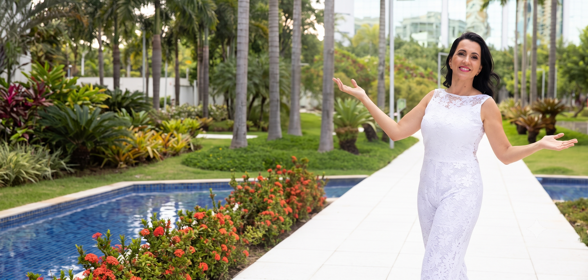
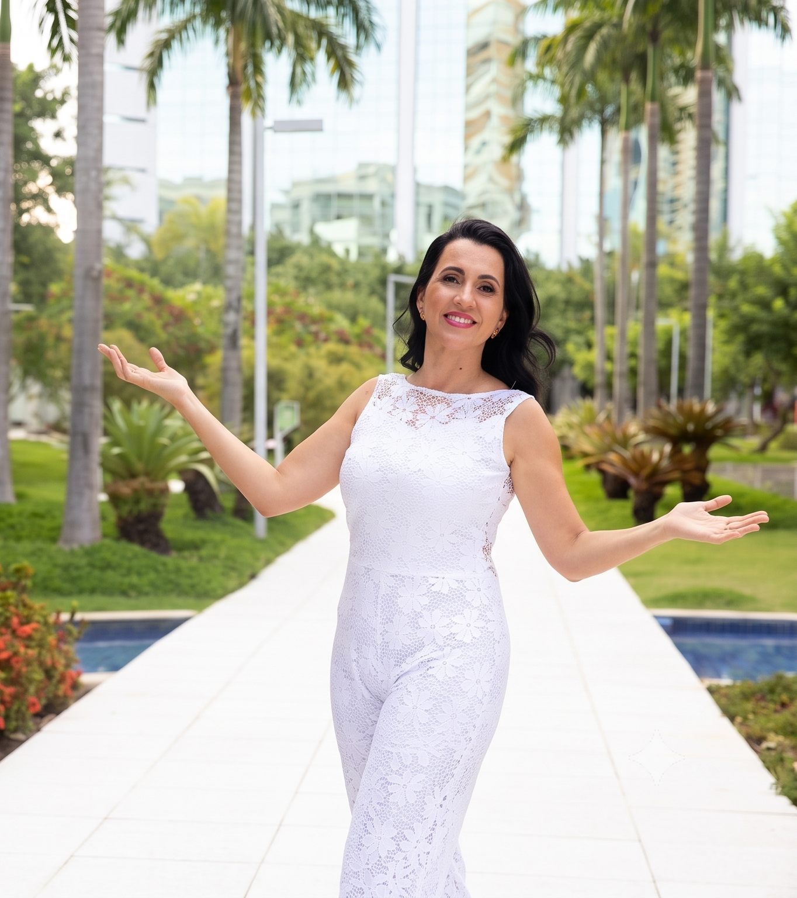
Sua saúde precisa acompanhar a vida que você construiu.
Nutrição personalizada para cuidar de você e da sua família com estratégia, prevenção, organização e acompanhamento próximo.
Sua alimentação precisa caber na sua vida — não a sua vida dentro de uma dieta.
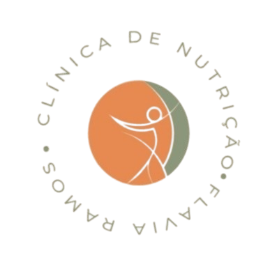
É respeitar o seu corpo e a dinâmica da sua família.
Conheça o Programa Familiar Integrado: da consulta à rotina da casa, cuidando de cada fase com estratégia e acolhimento.
"A distância entre sonho e realidade se chama ação. O alimento deve ser seu aliado diário de vitalidade, nunca de culpa."
Flavia Ramos • Nutricionista Clínica & Integrativa1. Avaliação Metabólica
Bioimpedância completa e análise de composição corporal e parâmetros de saúde.
2. Anamnese Detalhada
Investigação minuciosa de histórico de saúde, rotina alimentar, clínica, medicamentosa, sinais e sintomas.
3. Plano Alimentar Individualizado
Estratégia personalizada construída durante a consulta e entregue na hora em PDF e via aplicativo.
4. Suporte via WhatsApp
Acompanhamento pelo método check-in com suporte ativo e passivo para dúvidas do dia a dia.
5. Suplementação Consciente
Plano de suplementação nutricional personalizado, prescrito de forma criteriosa quando necessário.
6. Personal Diet & Gestão Familiar
Módulos opcionais com cardápio familiar personalizado, atendimento em grupo e treinamento prático de cozinheira.
Divisão dos Pilares de Atendimento
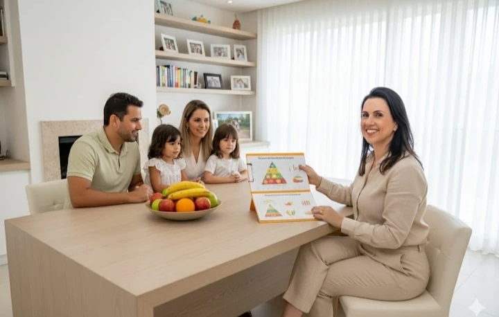
Atendimento Nutricional Personalizado
Presencial no Rio de Janeiro — Leblon & Barra da Tijuca | Online | Domiciliar (levamos material completo)- ETAPA 1 — AVALIAÇÃO COMPLETA: Anamnese clínica e nutricional, histórico de saúde, rotina, estilo de vida, alimentação, atividade física, sinais, sintomas e principais dificuldades. Definição dos objetivos, prioridades e metas do tratamento.
- ETAPA 2 — AVALIAÇÃO CORPORAL: No presencial: bioimpedância e avaliação física completa, com análise da composição corporal e gordura visceral. No online: avaliação por fotos, medidas e recursos de análise por IA, quando aplicável.
- ETAPA 3 — INVESTIGAÇÃO CLÍNICA E METABÓLICA: Interpretação dos exames laboratoriais e solicitação de exames complementares. Avaliação de aspectos metabólicos, intestinais e nutricionais.
- ETAPA 4 — PLANO ALIMENTAR ESTRATÉGICO: Construção do plano alimentar personalizado durante a consulta, com metas e etapas. Entrega pelo aplicativo, PDF e/ou impresso.
- ETAPA 5 — ACOMPANHAMENTO E AJUSTES: Acompanhamento da evolução, dificuldades e resultados, com ajustes de estratégia ao longo do processo. Opção de suporte por 30 dias ou programas de 3 a 6 meses.
"Você não recebe apenas uma dieta. Você recebe uma estratégia, com metas, etapas e acompanhamento."
Consultas Online
Brasil & Pacientes no Exterior • Videochamada + App + Suporte- Etapa 1: Consulta por videochamada, com 1 hora de duração e a mesma profundidade da consulta presencial.
- Etapa 2: Plano alimentar estratégico e personalizado, com definição de metas e etapas do processo.
- Etapa 3: Materiais de apoio personalizados: receitas, dicas e orientações práticas.
- Etapa 4: Suplementação estratégica, quando necessária, baseada em exames, sinais e sintomas.
- Etapa 5: Suporte via WhatsApp + opção de continuidade em programas de acompanhamento ou Cardápio Familiar Personalizado.
"Flexibilidade de fusos horários para brasileiros e pacientes ao redor do mundo."
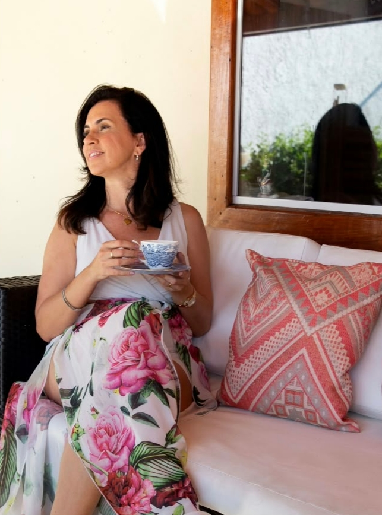
Cuidar de todos não deveria significar deixar você por último.
Talvez você seja a pessoa que acompanha os exames dos pais, pensa na saúde dos filhos, lembra o que o marido precisa fazer e ainda administra uma rotina profissional e pessoal intensa. E, no meio de tudo isso, tenta encontrar espaço para cuidar de você.
- O cansaço aumenta, a energia diminui, o sono muda.
- O intestino dá sinais e os exames alteram.
- O corpo muda e pede atenção.
Prazer, sou Dra. Flavia Ramos
Nutrição Familiar Integrativa
Unindo técnica médica, saúde intestinal, gastronomia prática e prevenção para todas as fases da família.
Graduação
Universidade Federal do Rio de Janeiro (UFRJ) em 1998 (+25 anos de prática clínica e +5.000 pacientes atendidos).
Especializações
- Nutrição Clínica
- Nutrição Esportiva
- Nutrição Funcional
- Gastronomia Aplicada à Nutrição Funcional
- Nutrição Positiva e Comportamental
- Microbiota Intestinal
Dra. Flavia Ramos • Nutricionista Clínica e Integrativa
CRN-4: 99100244 • E-mail: nutricionistaflaviaramos@gmail.com • Rio de Janeiro/RJ
Comer com prazer também é cuidar da saúde.
Com especialização em Gastronomia Funcional, a Dra. Flavia Ramos une rigor clínico ao sabor real. A comida da sua família não precisa ter sabor de dieta hospitalar. Ela deve ser aromática, variada, colorida e acolhedora.
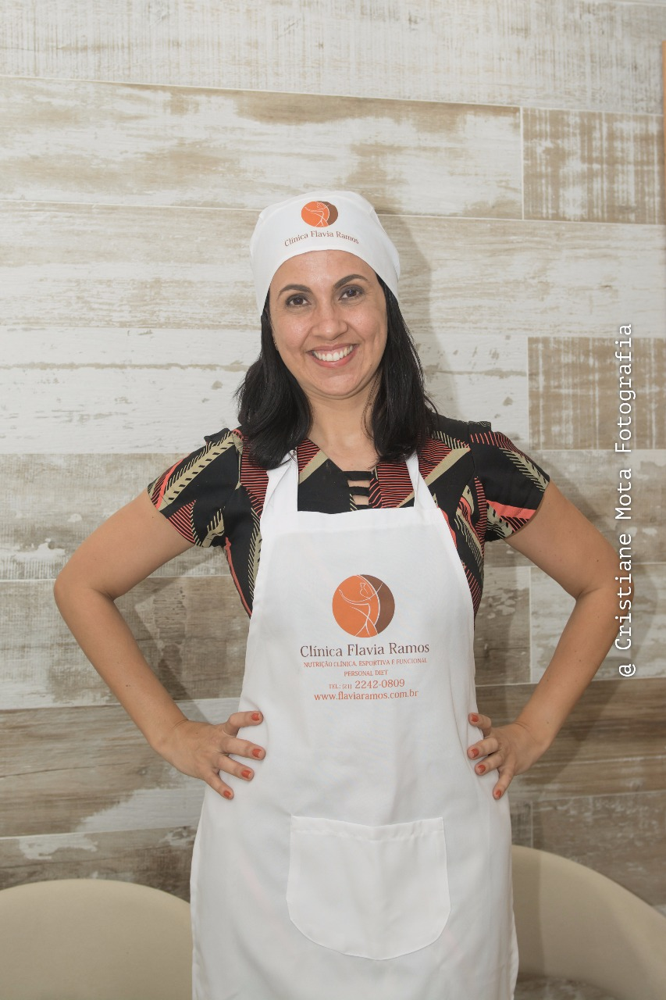
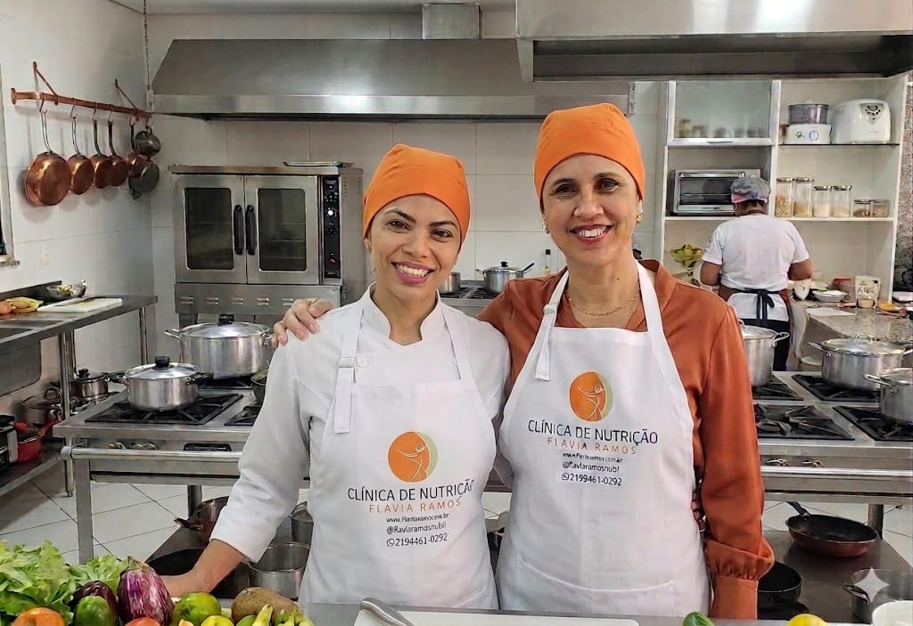
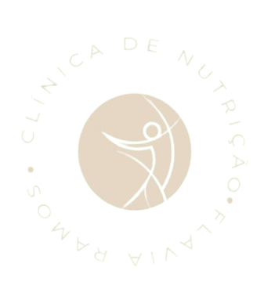
SAÚDE REAL PARA FAMÍLIAS REAIS
Nutrição que transforma
LONGEVIDADE COM PROPÓSITO
"Alimento é combustível. Para o corpo, para a mente e para a vida que você quer continuar vivendo."
COMO FUNCIONA
A CONSULTA
A consulta da Dra. Flavia é individualizada e estratégica, com foco em entender seu momento de forma completa para construir um plano possível de ser mantido dentro da sua rotina.
"Não espere o corpo gritar. Aprenda a escutar quando ele ainda está falando."
- Anamnese completa e avaliação da rotina
- Avaliação do histórico clínico e sintomas
- Avaliação física e composição corporal
- Avaliação de exames laboratoriais
- Plano alimentar estratégico personalizado
- Plano enviado em PDF e também pelo aplicativo
- Avaliação da necessidade de suplementação estratégica
- Solicitação de exames, quando necessário
- Estratégias práticas para facilitar a rotina alimentar
- Suporte para dúvidas
- Material de apoio e orientações complementares
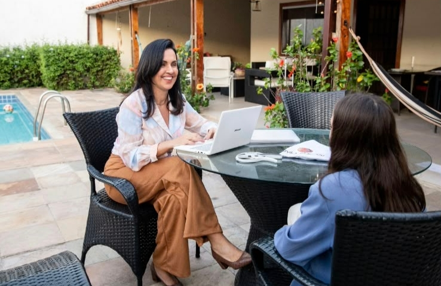
Precisão clínica para entender o que o seu corpo realmente precisa.
Mais do que o peso na balança: mapeamos taxa metabólica, massa muscular, gordura visceral, retenção de líquidos e hidratação celular para guiar um plano alimentar com embasamento científico.


Programas Especiais de
Acompanhamento
Vida em
Equilíbrio
Organização do corpo, emagrecimento, autocuidado e construção de uma rotina saudável e sustentável.
Mulher
Essencial
Programa focado em emagrecimento mais acelerado, melhora metabólica e redução de inflamação.
Vida Plena
60+
Programa voltado para idosos com foco em energia, força, autonomia, prevenção e qualidade de vida.
Check Up On /
Metabolic Health
Programa clínico focado em melhora de exames, sintomas, metabolismo e equilíbrio da saúde.
Gut Reset /
Flora Forte
Saúde intestinal profunda, melhora da digestão, redução de inchaço e fortalecimento da imunidade.
Acompanhamento completo e personalizado
para cada fase da sua vida e da sua família.
Nutrição que transforma
resultados que duram.
É respeitar o seu corpo e a dinâmica da sua família.
Atuo há +25 anos como Personal Diet e já apoiei milhares de lares com meu método exclusivo. Conheça o Programa Familiar Integrado.
Estou pronta para cuidar de você e da sua família.
Agende a sua consulta!
Dra. Flavia Ramos — Nutrição Familiar Integrativa
PROGRAMA FAMILIAR INTEGRADO
A união perfeita entre o atendimento domiciliar e o planejamento estratégico. Juntamos avaliação, organização da cozinha e treinamento em um único método.
Cardápio Personalizado
Planejamento alimentar criado de acordo com a rotina, preferências e objetivos da família. Mais do que receitas, é uma ferramenta prática para organizar a alimentação do dia a dia, com preparos viáveis.
Treinamento de Cozinheira
Capacitação prática para garantir que o cardápio seja executado com facilidade. Envolve otimização do tempo de fogão, técnicas anti-inflamatórias de preparo e armazenamento adequado.
Visita à Despensa e Cozinha
Avaliação presencial da geladeira, freezer, despensa, utensílios e compras. Uma auditoria completa para estruturar a praticidade diária e evitar desperdícios (Rio de Janeiro e São Paulo).
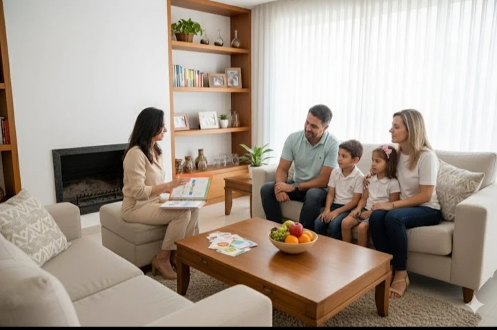
Programa Familiar.
DA CONSULTA À COZINHA:
Saúde que sai do papel e entra na rotina da sua família
- Consulta individual ou familiar em grupo
- Avaliação da rotina alimentar da casa
- Análise da geladeira, despensa, freezer e utensílios
- Conversa com quem prepara as refeições
- Identificação das necessidades e preferências da família
- Cardápio Familiar Personalizado com receitas no seu perfil
- Lista de compras semanal inteligente
- Receitas práticas e adaptadas à rotina da casa
- Treinamento da cozinheira (online ou presencial)
- Suporte para dúvidas, ajustes e execução do cardápio
- Auxílio na contratação ou encomenda de refeições quando necessário
- Acompanhamento mensal, trimestral ou anual
Mais organização na alimentação da família
Menos estresse com as refeições do dia a dia
Mais saúde, variedade e praticidade
Uma cozinha funcional e alinhada aos objetivos da família
Nós organizamos a alimentação da sua família.
Você volta a ter tempo para viver.
Sua família merece este cuidado.
Peça uma proposta personalizada.
Capacitação da Cozinheira: Delegar o planejamento para transformar a rotina.
"Ter uma profissional excelente na cozinha não basta se ela não recebe direcionamento nutricional. Nós alinhamos técnicas de corte, cocção saudável, porcionamento, congelamento inteligente e redução drástica de desperdício."
-
1Cardápios pré-definidos para a semana (a funcionária não precisa perguntar todo dia o que fazer).
-
2Técnicas saudáveis sem perda de sabor.
-
3Gestão eficiente de geladeira e despensa.
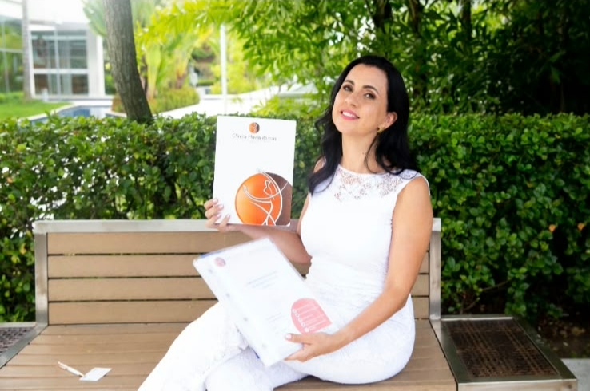
Nutrição que se adapta ao seu dia a dia
Não espere
SOBRAR TEMPO
para cuidar da saúde.
Crie uma estrutura
que funcione
mesmo quando
o tempo não sobra.
Porque um Programa Familiar?
Cada pessoa tem necessidades diferentes, mas a rotina da família é compartilhada.
No Programa Familiar você recebe:
"Cuidar da saúde juntos faz toda a diferença."
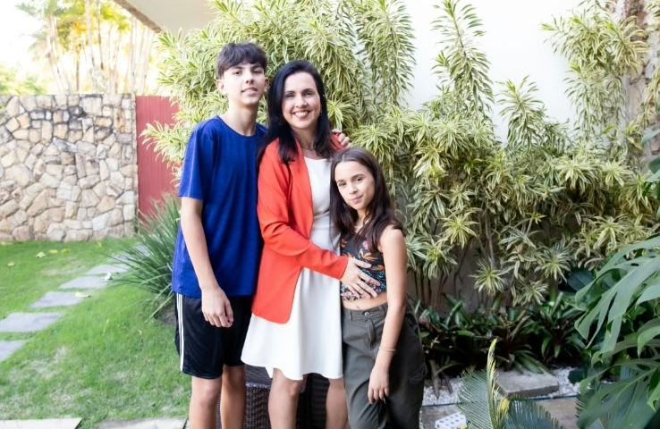
Refeições que Unem Gerações
Sem dietas restritivas ou pratos separados
Cardápio Personalizado
Tiramos o peso e a responsabilidade de gerenciar as refeições, gerando energia e bem-estar para você e sua família.
Lista Inteligente
Compras planejadas, sem desperdício de tempo e dinheiro.
Cardápio Personalizado
Planejamento semanal sob medida com variedade.
Cozinha Organizada
Estrutura prática de freezer, geladeira e despensa.
Suporte à Cozinheira
Orientação direta para quem prepara, aliviando a sobrecarga.

O que dizem os nossos pacientes
Histórias reais de quem recuperou a saúde, emagreceu sem dietas restritivas e transformou a rotina com o método da Dra. Flavia Ramos.
"Me chamo Ana Paula e sou paciente da Dra. Flavia Ramos e tenho me sentido bem! Estou emagrecendo e cada dia mais próxima do meu peso desejado, sem grandes esforços, porém seguindo as dicas mágicas da Dra. Flavia Ramos. O que tem me deixado bem feliz é a consciência alimentar que estou adquirindo a cada consulta, pois hj já não morro mais de amor por um doce como era antes, posso até comer mais com regrinhas que não me deixam sair do meu foco. Obrigada Dra. Flavia Ramos!"
Ana Paula Honorato
Paciente Acompanhada • 4 avaliações
"Minha experiência com a nutricionista Flavia está sendo excelente. Estou conseguindo alcançar meus objetivos graças às orientações dela, acompanhado por um programa de alimentação muito eficaz agregado a um treinamento correto. Nota 1000! Indico sempre! Vale muito! Sucesso, Dr. Flavia!!"
Guilherme Arcoverde
Performance & Treinamento • 4 avaliações
"Flavia me acompanha ha quase 10 anos, entende nossas fases, dificuldades e se adapta ao q precisamos. Amo de paixão!! Profissional mais q gabaritada!!"
Gabriela Lobato
Paciente há 10 anos • 11 avaliações
"Muito boa. Cheguei lá com diabetes alta, peso muito acima. Junto com a Dra. Flavia Ramos fomos adequando minha alimentação de forma a não suprir tudo e eu me sentir bem e feliz. Consegui perder peso e a diminuir a glicose."
Maria Ines Almeida
Saúde Metabólica • 2 avaliações
"Flavia, sou eternamente grata a você! Que ser humano incrível como profissional e como amiga, mostrando com tanta naturalidade como podemos sim perder peso mas sem deixar de comer o que gostamos. Eliminei 50 quilos quando virei essa chave com você!"
Lalá Mendonça
Paciente Acompanhada • Emagrecimento Sustentável
"Dra. Flavia Ramos, excelente nutricionista. Atenciosa, pontual e muito competente. O nível de detalhamento e carinho nas consultas no Leblon é incomparável. Super indico!"
Bernadete Machado
Paciente Clínica • Consultório Leblon
Quer me conhecer antes de marcar a sua consulta?
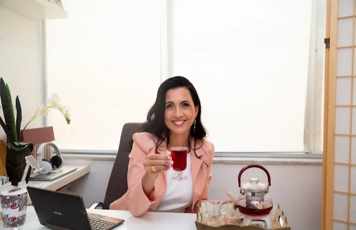
Plano de Ação Online
Uma conversa de 15 minutos online e gratuita para conhecer a Dra. Flavia Ramos e enxergar com total clareza seu próximo passo. Conversamos sobre seu momento e suas dificuldades. Ideal para trazer direção antes de iniciar um programa completo.
Marcar Minha Conversa GratuitaAcompanhamento Direto
Muito além de uma consulta isolada, o foco aqui é no acompanhamento da sua rotina. Oferecemos suporte contínuo para você e sua equipe via WhatsApp, garantindo que o planejamento seja executado sem frustrações e com total amparo no dia a dia.
Quero Suporte ContínuoAmbientes pensados para o seu acolhimento e conforto.
Atendimento presencial com total discrição e acessibilidade no Leblon e na Barra da Tijuca, além de acompanhamento Domiciliar exclusivo e Consultas Online para pacientes em todo o Brasil e no exterior.
Unidade Leblon (RJ)
Afrânio Medical Center
Pertinho da Estação Jardim de Alah do metrô
Em frente ao Shopping Leblon
Estacionamento rotativo no próprio prédio
Unidade Barra da Tijuca (RJ)
Condomínio O2 Corporate & Offices
Em frente ao Condomínio Península
Próximo à Tok&Stok e ao CasaShopping
Estacionamento disponível no local (Estapar com Via Fácil)
Sua experiência é fundamental para nós.
Veja o que nossos pacientes dizem ou deixe sua avaliação oficial no Google.
Perguntas Frequentes
Tudo o que você precisa saber sobre as consultas, exames e acompanhamento.
A primeira consulta dura, em média, 60 a 75 minutos. É realizada uma avaliação completa da sua saúde, incluindo sinais e sintomas, rotina, alimentação, histórico de saúde e dietas, sono, funcionamento intestinal, exames laboratoriais, preferências alimentares e objetivos.
Nos atendimentos presenciais, na Barra da Tijuca ou no Leblon, realizamos também a avaliação da composição corporal por bioimpedância, quando indicada.
Sim. Não trabalhamos com planos prontos. A estratégia inicial é construída junto com você durante a consulta, considerando sua rotina, preferências, dificuldades e objetivos.
O plano alimentar pode ser disponibilizado impresso, em PDF ou pelo aplicativo, podendo incluir substituições, orientações e receitas, de acordo com cada caso.
Sim, você pode realizar somente uma consulta.
Após a avaliação, caso seja interessante para seus objetivos, Flavia poderá indicar um dos Programas Especializados de Acompanhamento. A decisão de continuar o acompanhamento é feita de acordo com seu momento e suas necessidades.
Nos programas de acompanhamento, você conta com check-ins ativos e suporte pelo WhatsApp para dúvidas relacionadas ao seu planejamento, como substituições, produtos, receitas, viagens e situações do dia a dia.
O objetivo é acompanhar a execução do plano, observar sua evolução e realizar os ajustes necessários ao longo do processo.
A profundidade da avaliação e a personalização da estratégia nutricional são as mesmas.
A consulta presencial acontece na Barra da Tijuca ou no Leblon, no Rio de Janeiro, e pode incluir avaliação corporal por bioimpedância.
A consulta online é realizada por videochamada e permite atender pacientes de qualquer cidade ou país. Quando necessário, utilizamos medidas, fotos e outros recursos para acompanhar a evolução à distância.
Flavia realiza atendimentos domiciliares no Rio de Janeiro e em São Paulo, tanto individuais quanto familiares.
É uma opção para famílias, idosos, pessoas com dificuldade de deslocamento ou para quem deseja um atendimento mais próximo da própria realidade.
Quando necessário, o atendimento pode incluir uma avaliação da geladeira, freezer, despensa, utensílios e rotina de quem cozinha, permitindo traçar uma estratégia de organização alimentar para a casa.
O atendimento domiciliar pode ser contratado sozinho ou associado ao Cardápio Personalizado ou à Gestão Nutricional da Família.
Sim. Você receberá inicialmente um questionário sobre a rotina da casa, preferências alimentares, necessidades e objetivos. A partir dessas informações, elaboramos a proposta personalizada.
O serviço pode ser realizado 100% online para qualquer cidade ou país e pode incluir cardápio, receitas, substituições, planejamento e lista de compras, de acordo com o projeto contratado.
O treinamento de quem cozinha também pode ser acrescentado, se desejado.
Sim. Temos um treinamento específico para cozinheiras, funcionários ou para a pessoa responsável pelas refeições da casa.
São 10 módulos disponíveis, que podem ser selecionados conforme as necessidades de cada família. O treinamento pode ser realizado presencialmente ou online e também pode fazer parte do Cardápio Personalizado ou da Gestão Nutricional da Família.
É um acompanhamento mais completo para quem deseja organizar a alimentação da casa como um todo.
Podemos avaliar as necessidades dos diferentes integrantes da família e organizar rotina alimentar, planejamento das refeições, cardápio familiar, compras, receitas e orientação de quem cozinha.
A proposta é reduzir a sobrecarga de quem precisa decidir tudo e criar uma alimentação mais organizada e adequada à realidade daquela família.
Da consulta à cozinha, organizamos a alimentação da sua casa.
Você não precisa saber antes de falar conosco.
Se a dúvida estiver relacionada à sua saúde e ao acompanhamento mais adequado, você pode começar por uma conversa online inicial com Flavia.
Se sua principal dificuldade estiver na organização das refeições e da casa, pode começar pelo Check-up da Cozinha Online, uma sessão inicial para entender sua rotina, identificar os principais pontos de mudança e avaliar se um Cardápio Personalizado ou uma Gestão Nutricional da Família faria sentido para você.
Primeiro entendemos sua necessidade. Depois ajudamos você a escolher o melhor caminho.